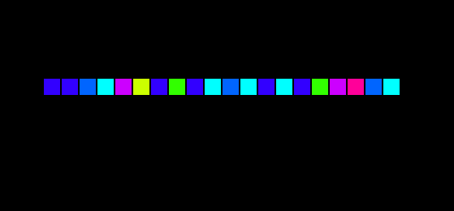

Unicode DESIGN
ABOUT
| 種類 | PC, グラフィック |
|---|---|
| 使用言語 | Processing |
| 制作時期 | 2016年7月 |
| 制作人数 | 1人 |

CONCEPT
普段私たちが見ている文字は、
パソコンの中ではある数字の並び（Unicode）として処理され、
ディスプレイで再び知っている形になって表示されます。
その私たちが普段見ることのない文字が持つ数字を取り出し、
そこに大きさや形を持たせました。
PRODUCT
「MARIKA KIYA」という文字Unicodeになおし、その数字に再び別の形になおしました。

1. モノトーン
文字に重さ を付けました。
通常の文字の形だけだと、大きさや太さで重さを感じますが、それとはまた異なる重みです。
文字に重さ を付けました。
通常の文字の形だけだと、大きさや太さで重さを感じますが、それとはまた異なる重みです。
2. カラー
文字に色を付けました。
単語・文章を書くとき、1文字1文字に色を持たせることはほとんどありません。しかし、こうやってみると、それぞれが色を持っていることが分かります。
文字に色を付けました。
単語・文章を書くとき、1文字1文字に色を持たせることはほとんどありません。しかし、こうやってみると、それぞれが色を持っていることが分かります。
3. 交差
文字同士に動きを持たせました。
文字はいつもはただ横に並ぶだけなのに、手を伸ばしているかのような動きを表現することができました。文字同士が引き寄せあっているようにも見え、それぞれの文字に新しい価値が生まれます。
文字同士に動きを持たせました。
文字はいつもはただ横に並ぶだけなのに、手を伸ばしているかのような動きを表現することができました。文字同士が引き寄せあっているようにも見え、それぞれの文字に新しい価値が生まれます。